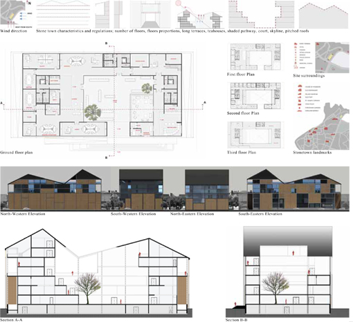

Stonetown, Zanzibar - Tanzania
Proffesional work - Competition
EHAF Consulting Engineers
2008
Senior Architect
Team
:::Laila Selim
:::Amr Salah
:::Sherine El Banna
:::Peter Nickola
:::Heba Rashad
:::Sherif Mohsen
The challenge was to design the people's bank of zanzibar to become a contextual yet contemporary and iconic building that reflects an exclusiv image of the People's Bank Of Zanzibar head quarter in stone town. The stone town has its own building regulations for its historical buildings, consequently, the design has been guided by Architecural regulations and inspired by characteristics from Landmarks of stone town such as house of wonders, old dispensary etc..
The building is designed around a central courtyard allowing the air to circulate inside the building. It also provides a well lit yet shaded outdoor area, becoming a central connecting volume between terraces linking the users visually and socially. This concept has been maintained internally through double heights creating a vertical connection and visual continuity throughout the building.
The building will be constructed using framing steel structural system. Local materials were used such as raffia and coral stones encouraging local craftsmanship. Local materials are installed within the steel frames with respect to the views; less raffia covering the facade on the top floors allowing views over the ocean and stone town landmarks.|  |